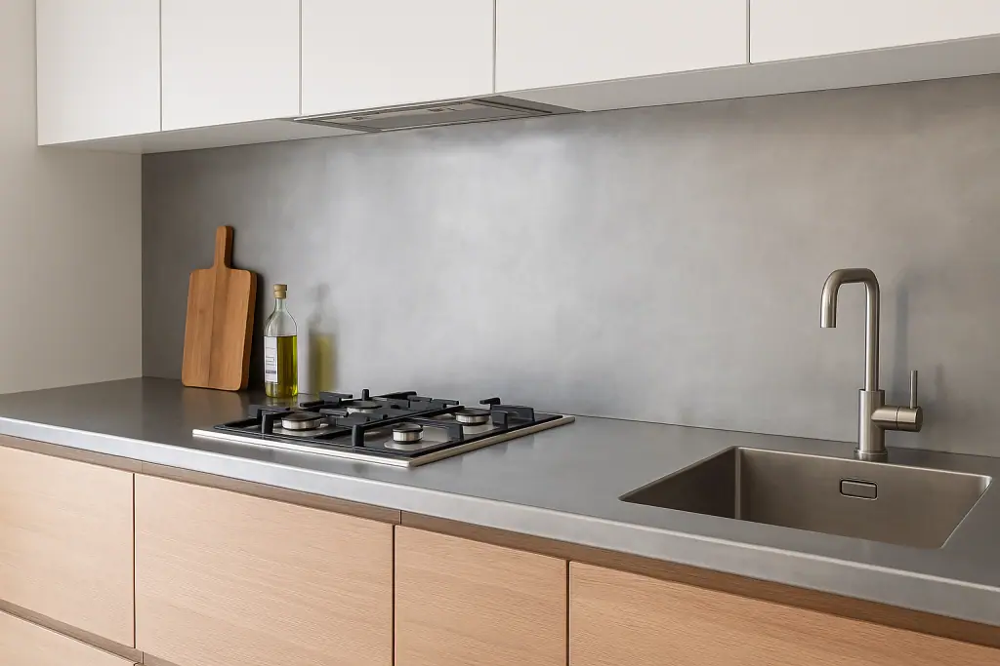

A zinc splashback from Halman Thompson is a stylish, durable, and practical addition to any kitchen or workspace. Whether it’s a sleek feature in your home or a hard-wearing solution for a restaurant or commercial kitchen, our custom zinc splashbacks combine modern appeal with long-lasting performance. Available in both natural and aged finishes, zinc offers a distinctive metallic tone that works beautifully in contemporary and traditional settings alike. As well as being visually striking, zinc is naturally antibacterial and easy to maintain, making it ideal for areas where hygiene is a priority. Our bespoke approach means you can buy zinc splashbacks in the UK that are made to your exact specifications – ensuring a perfect fit and a completely unique finish for your space.
Please note: our pieces are suitable for use behind non-steam cookers only. It is important that the material is not exposed to direct contact with steam or excessive heat, as this will damage the surface finish.
Request a quote for your bespoke zinc splashbacks.


Cut to size
Every zinc splashback we create is made to measure. Whether you need a single panel behind a hob, a full wall covering, or multiple sections to fit around cupboards and appliances, our skilled metalworkers will cut and shape your splashback to fit seamlessly.
We work to your exact measurements and can include cut-outs for sockets, switches, or any other features. Simply send us your plans or measurements and we’ll make sure your splashback is tailored perfectly to your needs.
Ready to go
Your custom zinc splashback will arrive fully finished and ready for easy installation. We handle all shaping and finishing here in our UK workshop, ensuring every piece meets our high-quality standards.
Once your design is confirmed, we typically work to a 4-6 week turnaround, with UK delivery included in the price. All that’s left for you to do is fit it in place and enjoy the transformation.
Get a free quotation for your handmade zinc splashback today.
Bespoke Zinc Splashbacks
Every zinc splashback from Halman Thompson is handcrafted from premium zinc sheets by our experienced artisans. We offer a choice of finishes, including lightly aged for a soft patina and antique zinc for a richer, darker tone.
You can opt for a lacquered finish to lock in the look or choose an unlacquered surface that will naturally develop character over time. Whichever option you go for, your splashback will be a one-of-a-kind feature.
Whether you’re updating your home or fitting out a busy restaurant kitchen or bar, Halman Thompson’s zinc splashbacks offer a bespoke, high-quality solution that combines great looks with everyday practicality.
If you’re looking for zinc splashbacks for sale in the UK, explore our options today and discover why our customers choose us…
Why Choose a Zinc Splashback?
A zinc splashback offers a blend of style and practicality that’s hard to match. It’s tough, easy to clean, and naturally resistant to moisture and corrosion – perfect for busy kitchens at home or in commercial settings, as well as high-traffic catering environments where durability is key. Its smooth, antibacterial surface makes wiping down quick and simple, helping to maintain a fresh and hygienic workspace with minimal effort.
Compared to other metals such as copper or brass , zinc delivers a cooler, silver-toned finish with its own distinctive appeal. Zinc also offers a refreshing alternative to more popular choices like stainless steel for those seeking something different that still suits a wide range of interiors.
This neutral yet distinctive look complements everything from minimalist, modern kitchens to more rustic, characterful spaces. It’s a great choice if you’re looking for a contemporary, understated finish that still brings plenty of personality and character to your room.
Why not take a look at our beautiful copper splashbacks , brass splashbacks , and corten steel splashbacks for more inspiration?
Looking After Your Zinc Splashbacks
Caring for your zinc splashback is simple, and with minimal maintenance requirements, your kitchen splashback will be a beautiful focal point for many years to come.
For lacquered finishes, just wipe with a soft cloth and mild soapy water, avoiding abrasive sponges or harsh chemical cleaners.
If you’ve chosen an unlacquered splashback, it will develop a natural patina as it ages over time. Wipe up spills promptly to minimise marking, and clean occasionally with a soft cloth. This evolving finish is part of zinc’s charm, giving your splashback a look that’s uniquely yours!
Have any questions about our zinc splashbacks? Contact Halman Thompson today .
Choose a finish


If you can dream it, we’ll make it.
Bars, balustrades, staircases, worktops, cladding and pieces that don’t have a name yet. Our designers and craftspeople work in brass, copper, zinc and steel, and alongside wood.